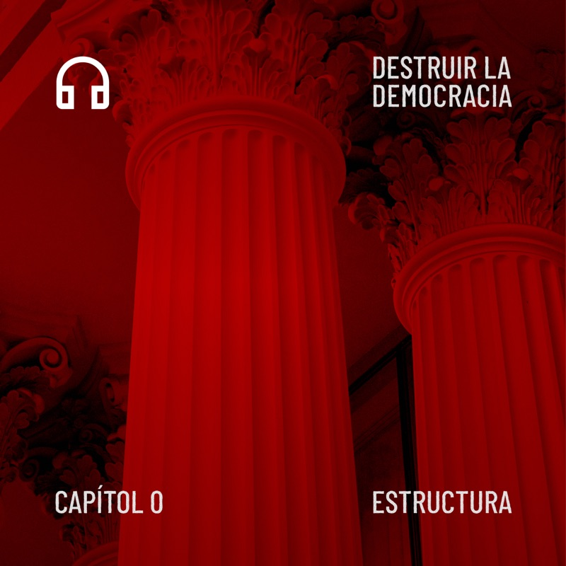
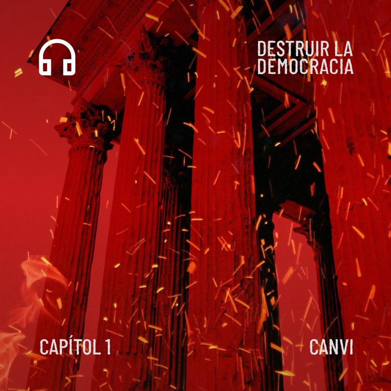
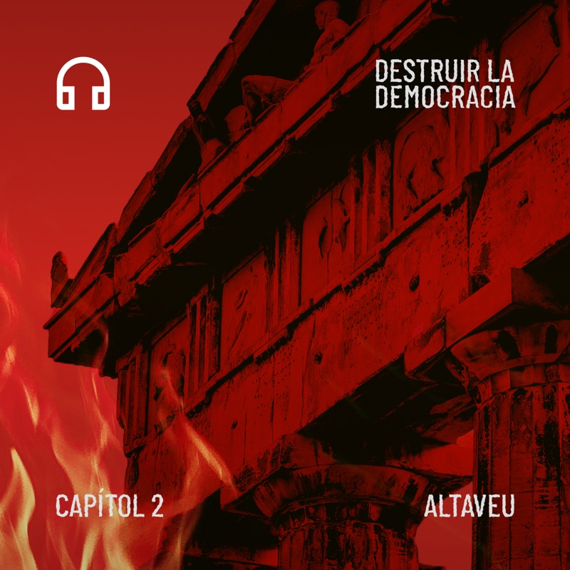
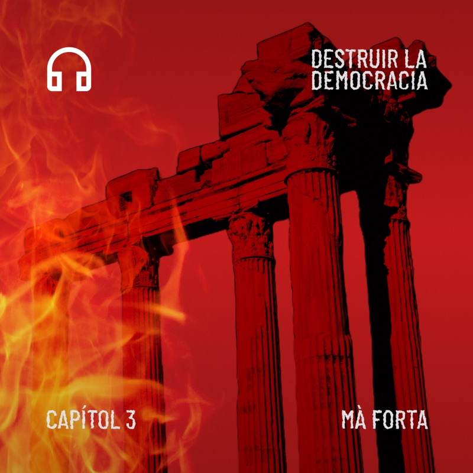
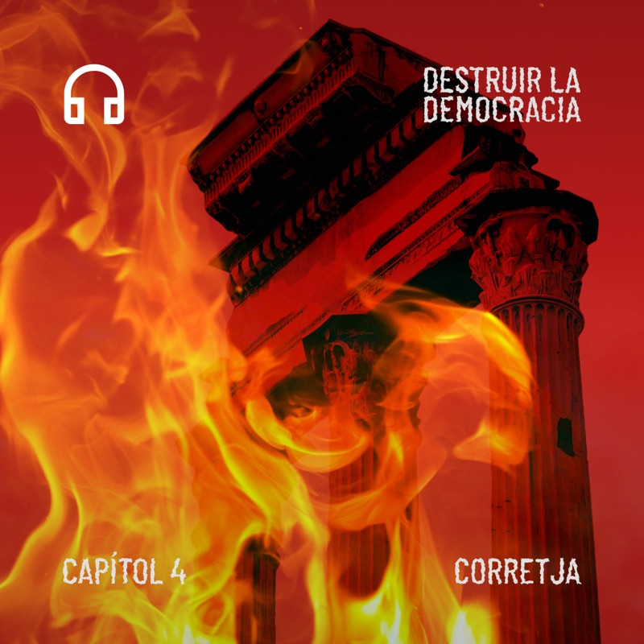
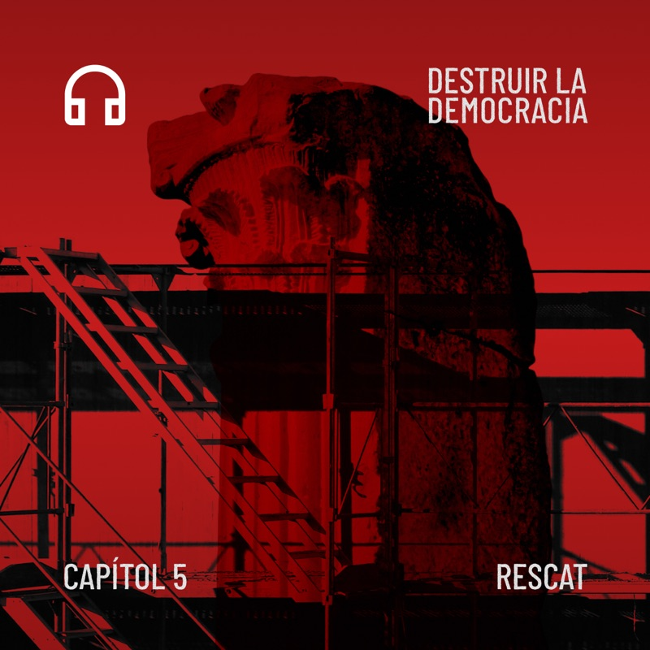
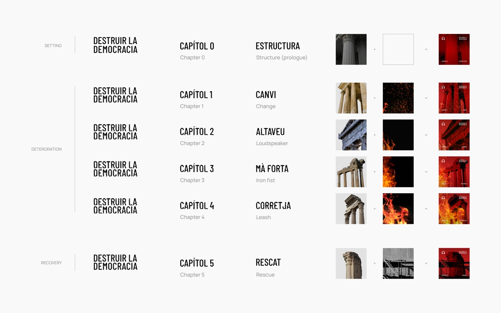
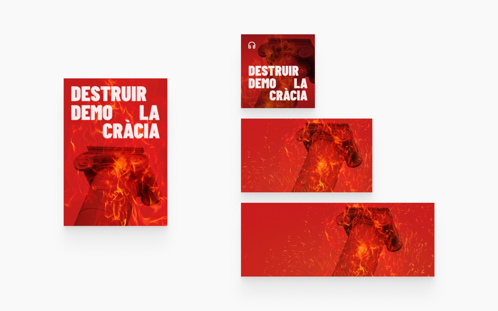

Podcast production and brand identity
Co-authored the podcast "Destruir la Democràcia" ("Destroy Democracy") and created its visual identity. The project won a competition to receive funding from the "Xarxa Audiovisual Local" ("Local Audiovisual Network") for its production.
- Date
- 2025
- For
- Final thesis project
- Authors
- Manel Lamadrid, Eloi Sadurní, Bernat Saiz
- Tools
- Figma, Adobe Audition (podcast editing)

Main cover of the podcast
Context
"Destruir la Democràcia" ("Destroy Democracy") is a five-episode podcast about the undermining of democratic institutions from within. I co-authored this project with Manel Lamadrid and Eloi Sadurní. We carried it out as our final thesis project for our Journalism BA and it won a small production budget from the "Xarxa Audiovisual Local" of Catalonia. Each episode has a fiction and a non-fiction part. The fiction part features a Machiavellian who tries to convince the listener, put in the position of a political candidate that has just won political representation in the Parliament of a fictional country. The non-fiction part is based on a narration featuring journalists, political science experts, spokespersons of key political institutions, and politicians, among them two former Catalan presidents.
Role
I conceived the idea and led its creative direction (art direction and sound design). For the visuals, I developed an identity based on the deterioration of the brand itself and the visual elements (classical buildings) used to represent democracy. The result is a modular and dynamic branding system that allowed us to convey the state of decay of the system portrayed in the podcast in each episode.
Episodes

Instruction manual for listening to the podcast ‘Destruir la democràcia’. We explain where the project comes from, how it is structured and what you will find along the way.

We begin ‘Destruir la democràcia’ by reviewing the foundations of this political system. What can shake a democracy? Do we take it too much for granted? We talk about the most important institutions and spaces of a democratic government, contrasting it with an autocracy and analyzing the impact of anti-establishment forces and the media. All of it starting from the resignation of a head of government, forced to call elections over a corruption case, and the emergence of the Partit pel Canvi (Party for Change). With contributions from Toni Rodón, Ana Sofía Cardenal, Abel Escribà, Artur Mas, Pere Aragonès, Montserrat Tura, Mònica Terribas, Albert Alexandre, Anna Grau and Alba Tobella.

The new leader of the Partit pel Canvi comes to power with the support of a minority parliamentary group, which he agrees to give ministries but not power. The power is his, and it is time for civil servants, journalists and business leaders to notice... In this episode we delve into the role of the media and social networks in calling the democratic system into question. Also into control of the public administration and the need to make friends among business leaders. Featuring Toni Rodón, Pere Aragonès, Carles Ramió, Ana Sofía Cardenal, Feliu Madaula, Sergi Basco, Joan Foguet, Albert Alexandre, Anna Grau, Mònica Terribas and Laura Pinyol.

The second elections are an undisputed victory for the leader of the Partit pel Canvi, who wins the majority he needs to perpetuate himself in power and make that power absolute. The legislative changes to make it possible begin. In the third episode of the podcast we talk about restricting and persecuting the opposition while police repression increases and the separation of powers is called into question. Featuring Abel Escribà, Joan Josep Vallbé, Montserrat Nebrera, Ana Sofía Cardenal, Pere Aragonès, Benet Salellas, Artur Mas, Montserrat Tura, Feliu Madaula and Carles Riera.

The leader of the Partit pel Canvi begins his third term. There are no more protests in the streets, and it is time to show off the government’s most eye-catching social measures while, quietly, investment in surveillance increases. The fourth episode explains the importance of controlling the judiciary, changing the electoral system and eliminating the rule of law in order to destroy democracy. Featuring Montserrat Tura, Benet Salellas, Alexandra García, Pascual Ortuño, Joan Josep Vallbé, Montserrat Nebrera, Carles Ramió, Toni Rodón and Ana Sofía Cardenal.

The fourth term opens with a denunciation from the international community: the government of the Partit pel Canvi has effectively become an autocracy. The country is mired in an economic crisis and the former head of government is forced into exile. The final episode aims to be a glimmer of hope for the future of democracy and sets out the way back: the destruction of autocracy. Featuring Ana Sofía Cardenal, Abel Escribà, Carles Ramió, Sergi Basco, Joan Foguet, Feliu Madaula, Mònica Terribas, Anna Grau, Albert Alexandre, Benet Salellas, Alexandra García, Joan Josep Vallbé, Carles Riera and Artur Mas.

Visual identity of the podcast
Based on the idea of "institutional decay", each episode features a gradually deteriorated identity, both in lettering and visual images. The last episode, based on the idea of "recovering" democracy, features a restored text and scaffolding.

Format adaptation for XAL's platform
As part of "La Xarxa+", XAL's video and audio on-demand platform, I adapted the assets to the requested formats.